pacman::p_load(sf, spdep, sfdep,tmap,
tidyverse, plotly, Kendall)
set.seed(1234) # setting seed to ensure reproducibilityTake-home Exercise 2: Geospatial Analytics in Thailand Tourism Sector (Pre, During, Post COVID-19)
2 Overview
Tourism plays a significant role in Thailand’s economy, contributing about 20% of the country’s GDP. In 2019, Thailand generated 90 billion USD from both domestic and international tourism, but the COVID-19 pandemic led to a drastic drop in revenues down to 24 billion USD in 2020.
The figure below illustrates the total revenue from the tourism sector from January 2019 to February 2023, highlighting a gradual recovery in tourism revenue starting in September 2021.

Nonetheless, it is important to point out that the tourism economy of Thailand does not have an even distribution. The figures below illustrate that the tourism economy of Thailand mainly revolves around 5 provinces: Bangkok, Phuket, Chiang Mai, Sukhothai & Phetchaburi.
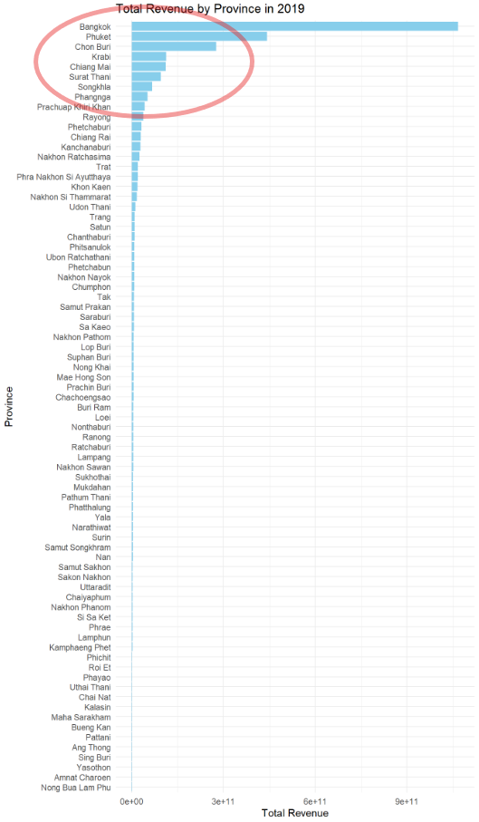
The main aim of this initiative is to discover the impacts of COVID-19 on Thailand’s tourism economy using spatial and spatio-temporal statistics.
2.1 The Task
The objectives are to explore the following:
- Whether the key indicators of Thailand’s tourism economy are independent of spatial and spatio-temporal factors.
- If dependencies exist, aim to identify the clusters, outliers, and emerging hot or cold spots within the tourism economy.
The specific tasks for this exercise are:
- Using appropriate sf and tidyverse functions, prepare the following geospatial data layers:
- A study area layer in sf polygon format, covering provinces in Thailand, including Bangkok.
- A tourism economy indicators layer for the study area in sf polygon format.
- A derived tourism economy indicator layer in the spatio-temporal s3 class of sfdep, with a monthly and yearly time series.
- Using the extracted data, conduct the following analyses using sfdep methods:
- Global spatial autocorrelation analysis
- Local spatial autocorrelation analysis
- Emerging hotspot analysis
- Describe the spatial patterns identified through these analyses.
2.2 Getting Started
2.2.1 Installing and Loading the R Packages
The following R packages will be launched into the R environment using p_load() from pacman package below.
The R packages needed for this exercise are as follows:
- Spatial data handling
- sf, spdep and sfdep
- Attribute data handling
- tidyverse, especially readr, ggplot2 and dplyr
- Choropleth mapping
- tmap
2.3 The Data
For this exercise, two data sets will be utilised. They are:
- Thailand Domestic Tourism Statistics at Kaggle.
- Thailand - Subnational Administrative Boundaries at HDX. the province boundary data set is used for this exercise.
2.3.1 Loading the Attribute Data
There are 2 versions of this dataset thailand_domestic_tourism_2019_2023.csv & thailand_domestic_tourism_2019_2023_ver2.csv. Version 2 will be used for this exercise. The csv file will be imported using read_csv function of readr package.
tourism_stats <- read_csv("data/aspatial/thailand_domestic_tourism_2019_2023_ver2.csv") glimpse() is used to have a brief overview of the data. This will enable us to see the columns and their respective data types.
glimpse(tourism_stats)Rows: 30,800
Columns: 7
$ date <chr> "1 01 2019", "1 01 2019", "1 01 2019", "1 01 2019", "1 0…
$ province_thai <chr> "กรุงเทพมหานคร", "ลพบุรี", "พระนครศรีอยุธยา", "สระบุรี", "ชัยนาท…
$ province_eng <chr> "Bangkok", "Lopburi", "Phra Nakhon Si Ayutthaya", "Sarab…
$ region_thai <chr> "ภาคกลาง", "ภาคกลาง", "ภาคกลาง", "ภาคกลาง", "ภาคกลาง", "…
$ region_eng <chr> "central", "central", "central", "central", "central", "…
$ variable <chr> "ratio_tourist_stay", "ratio_tourist_stay", "ratio_touri…
$ value <dbl> 93.37, 61.32, 73.37, 67.33, 79.31, 71.70, 64.65, 71.21, …2.3.1.1 Data Dictionary for Attribute Data
This dataset contains statistics on tourism in Thailand from Jan 2019 to Feb 2023, broken down by province. The dataset includes information on the number of tourists, the occupancy rate, and the profits generated by tourism in each province, as well as the
Sourced from raw data provided by the Official Ministry of Tourism and Sports Statistics, which was manually entered into Excel files.
The author has pre-processed the data using Python with the intention of making it more accessible in the appropriate format which has the potential to provide valuable insights into the domestic tourism industry in Thailand, including trends and patterns across different provinces over time. Researchers, analysts, and policy-makers with an interest in the domestic tourism sector in Thailand may find this dataset useful for their work. Source: (Thailand Domestic Tourism Statistics by Thaweewat R)
The description for some of the variables have been re-phrased for a more accurate alignment of understanding in line with the variables.
| Column | Description |
|---|---|
| date | The month and year in which the statistics were recorded. The dataset covers the years 2019-2023. |
| province_thai | The name of the province in Thailand, in the Thai language. |
| province_eng | The name of the province in Thailand, in English. |
| region_thai | The name of the region in Thailand to which the province belongs, in the Thai language. |
| region_eng | The name of the region in Thailand to which the province belongs, in English. |
| variable | The 8 types of data being recorded, such as the number of tourists or the occupancy rate. |
no_tourist_all The total number of tourists (domestic & foreign) who visited the province |
|
no_tourist_foreign The number of foreign tourists who visited the province |
|
no_tourist_thai The number of Thai tourists (domestic) who visited the province |
|
no_tourist_occupied -> no_tourist_stay The total number of occupied hotel rooms in the province |
|
occupancy_rate -> ratio_tourist_stay The percentage of occupied travel accommodation in the province |
|
revenue_all The revenue generated by the tourism industry in the province, in Thai Baht |
|
revenue_foreign The revenue generated by foreign tourists in the province, in Thai Baht |
|
revenue_thai The revenue generated by Thai tourists in the province, in Thai Baht |
|
| value | The value of the data being recorded. |
From the description above, we can identify the columns to be selected for analysis. For this exercise, the columns: date, province_eng, variable and value will be selected.
2.3.1.2 Data Integrity Checks
The two following code chunks are utilised to check for any duplicated or missing values in each column
any(duplicated(tourism_stats))[1] FALSEsum(is.na(tourism_stats))[1] 0The results above tell us that there are no duplicated and missing values.
2.3.1.3 Data Preparation
The relevant columns that will be used for analysis are then selected using the code chunk below.Additionally, the province_eng column will be renamed to province since we are only taking this particular column and not the column labelled province_thai.
tourism_stats_selected <- tourism_stats %>%
select(date, province_eng, variable, value) %>%
rename(province = province_eng)# Grouping by province and year, then summarizing total tourist count
tourism_stats_grouped <- tourism_stats %>%
group_by(province_eng, variable) %>%
rename(province = province_eng) %>%
summarise(total_value = sum(value, na.rm = TRUE))2.3.1.4 Exploratory Data Analysis (EDA)
Exploratory data analysis (EDA) will be carried out in this section using statistical graphic functions of ggplot2 package. The variables are plotted to get a sense of the distribution.
2.3.1.4.1 Revenue
tourism_stats_selected %>%
filter(variable == "revenue_all") %>%
ggplot(aes(value,fill = variable)) +
geom_histogram(bins = 20) +
theme(legend.position="none")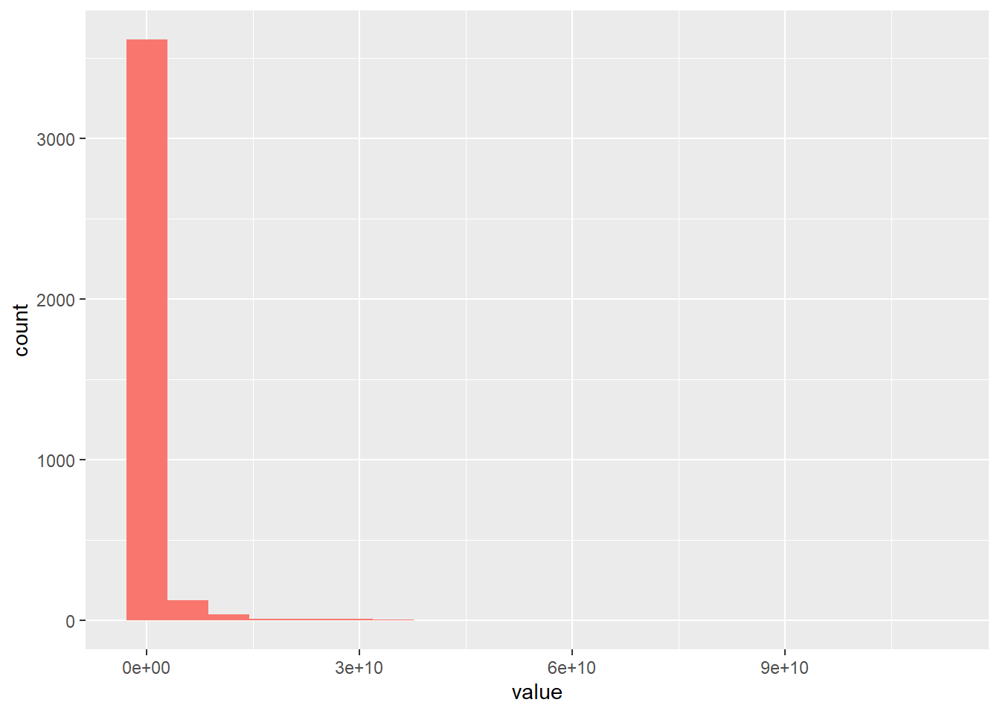
It can be observed that the revenue generated by tourism is right skewed as such in can also be interpreted that a number of provinces are the ones generating majority of the revenue for Thailand’s tourism.
tourism_stats_selected %>%
filter(variable == "revenue_thai") %>%
ggplot(aes(value,fill = variable)) +
geom_histogram(bins = 20) +
theme(legend.position="none")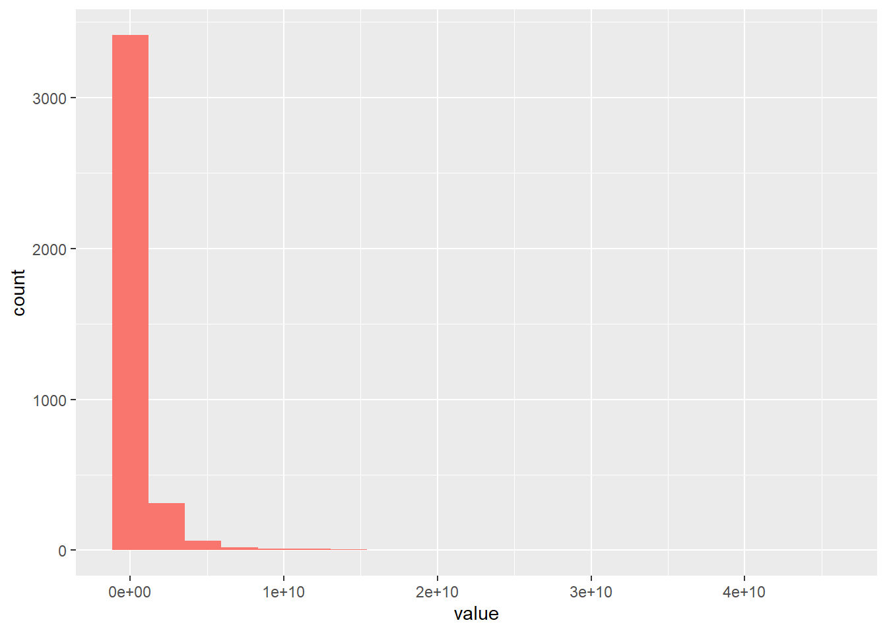
tourism_stats_selected %>%
filter(variable == "revenue_foreign") %>%
ggplot(aes(value,fill = variable)) +
geom_histogram(bins = 20) +
theme(legend.position="none")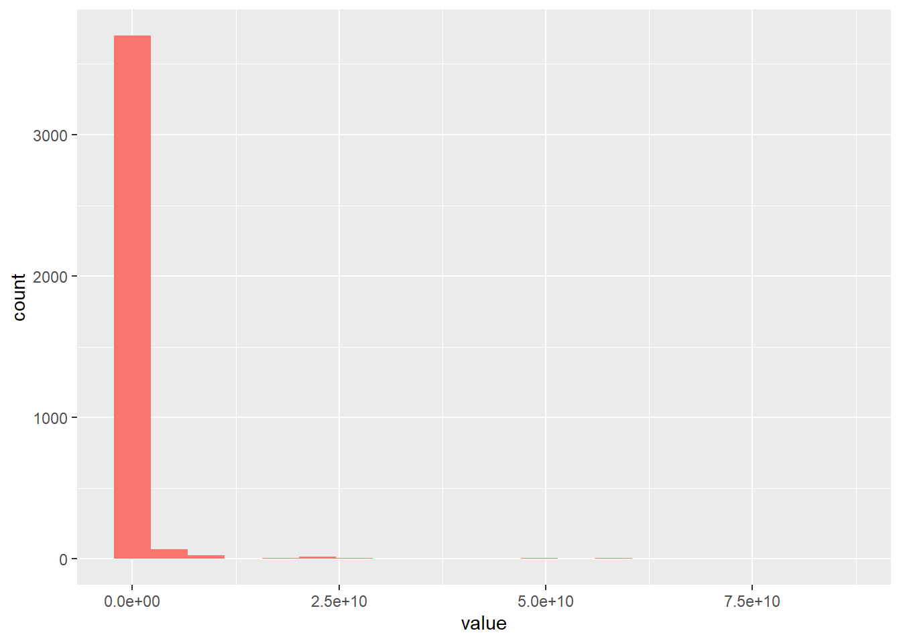
Similarly, when looking at domestic and foreign tourism revenue individually the plots are also showing a right skew.
2.3.1.4.2 Occupancy rate (ratio_tourist_stay)
tourism_stats_selected %>%
filter(variable == "ratio_tourist_stay") %>%
ggplot(aes(value,fill = variable)) +
geom_histogram(bins = 20) +
theme(legend.position="none")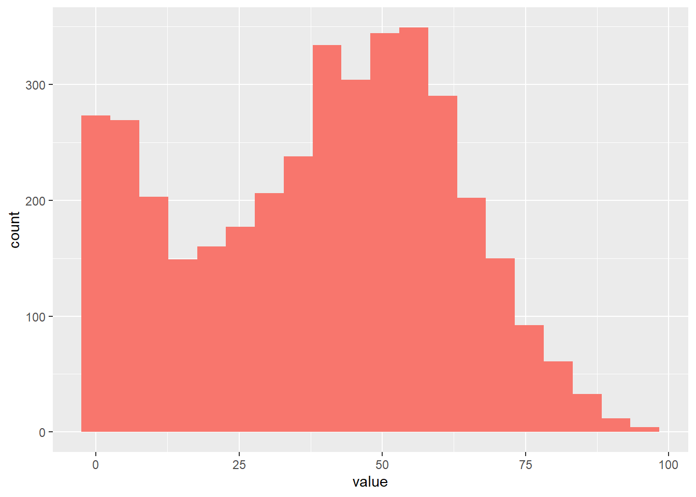
2.3.1.4.3 Total number of tourists
tourism_stats_selected %>%
filter(variable == "no_tourist_all") %>%
ggplot(aes(value,fill = variable)) +
geom_histogram(bins = 20) +
theme(legend.position="none")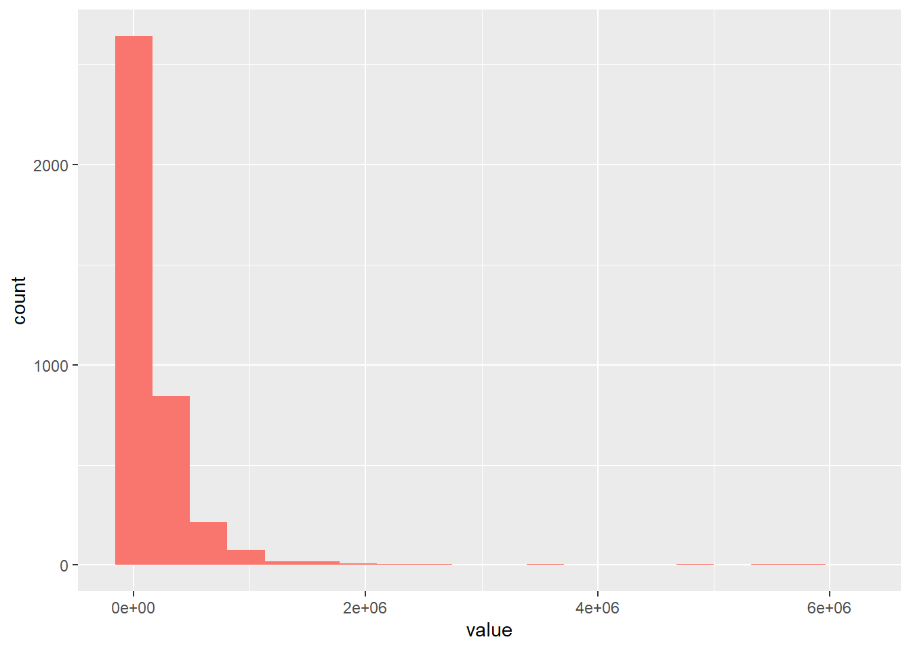
From the above histogram plots, the variables of revenue generated by tourism and total number of tourists are right-skewed which can be interpreted as the vast majority of data points being concentrated near zero. This is indeed consistent with the table shown in the overview where a few provinces in Thailand dominate tourist visits and revenue while most of the other provinces contribute less.
For ratio_tourist_stay the histogram appears to be relatively symmetric with a slight skew to the right.
2.3.2 Loading the Geospatial Data (Thailand - Subnational Administrative Boundaries)
The code chunk below is used to import the Sub-national Administrative Boundaries of Thailand. Level 1 will be used as it represents the province boundary as seen in the HDX website.

thadmin <- st_read(dsn = "data/geospatial",
layer = "tha_admbnda_adm1_rtsd_20220121")Reading layer `tha_admbnda_adm1_rtsd_20220121' from data source
`C:\zjho008\ISSS626-GAA\Take-home_Ex\Take-home_Ex02\data\geospatial'
using driver `ESRI Shapefile'
Simple feature collection with 77 features and 16 fields
Geometry type: MULTIPOLYGON
Dimension: XY
Bounding box: xmin: 97.34336 ymin: 5.613038 xmax: 105.637 ymax: 20.46507
Geodetic CRS: WGS 84The message above reveals that the geospatial objects are multi-polygon features. There are a total of 77 multipolygon feature representing the different provinces in Thailand and 16 fields in thadmin (Thailand Administrative) simple feature data frame. thadmin is in WGS84 Geodetic coordinates system. The bounding box provides the x extend and y extend of the data.
To learn more about the simple features object, we can apply glimpse() of dplyr package.
glimpse(thadmin)Rows: 77
Columns: 17
$ Shape_Leng <dbl> 2.417227, 1.695100, 1.251111, 1.884945, 3.041716, 1.739908,…
$ Shape_Area <dbl> 0.13133873, 0.07926199, 0.05323766, 0.12698345, 0.21393797,…
$ ADM1_EN <chr> "Bangkok", "Samut Prakan", "Nonthaburi", "Pathum Thani", "P…
$ ADM1_TH <chr> "กรุงเทพมหานคร", "สมุทรปราการ", "นนทบุรี", "ปทุมธานี", "พระนครศรีอ…
$ ADM1_PCODE <chr> "TH10", "TH11", "TH12", "TH13", "TH14", "TH15", "TH16", "TH…
$ ADM1_REF <chr> NA, NA, NA, NA, NA, NA, NA, NA, NA, NA, NA, NA, NA, NA, NA,…
$ ADM1ALT1EN <chr> NA, NA, NA, NA, NA, NA, NA, NA, NA, NA, NA, NA, NA, NA, NA,…
$ ADM1ALT2EN <chr> NA, NA, NA, NA, NA, NA, NA, NA, NA, NA, NA, NA, NA, NA, NA,…
$ ADM1ALT1TH <chr> NA, NA, NA, NA, NA, NA, NA, NA, NA, NA, NA, NA, NA, NA, NA,…
$ ADM1ALT2TH <chr> NA, NA, NA, NA, NA, NA, NA, NA, NA, NA, NA, NA, NA, NA, NA,…
$ ADM0_EN <chr> "Thailand", "Thailand", "Thailand", "Thailand", "Thailand",…
$ ADM0_TH <chr> "ประเทศไทย", "ประเทศไทย", "ประเทศไทย", "ประเทศไทย", "ประเทศ…
$ ADM0_PCODE <chr> "TH", "TH", "TH", "TH", "TH", "TH", "TH", "TH", "TH", "TH",…
$ date <date> 2019-02-18, 2019-02-18, 2019-02-18, 2019-02-18, 2019-02-18…
$ validOn <date> 2022-01-22, 2022-01-22, 2022-01-22, 2022-01-22, 2022-01-22…
$ validTo <date> -001-11-30, -001-11-30, -001-11-30, -001-11-30, -001-11-30…
$ geometry <MULTIPOLYGON [°]> MULTIPOLYGON (((100.6139 13..., MULTIPOLYGON (…2.3.2.1 Renaming of column
For ease of reference similar to what was done with the attribute data, ADM1_EN is renamed to province.
thadmin <- thadmin %>%
rename(province = ADM1_EN)2.3.2.2 Setting of Coordinate reference system (CRS)
In this step, st_crs() function of the sf package will be utilised to check the CRS information. If the CRS is not reflecting 32647, the EPSG code of Thailand st_transform() function can be used to transform the EPSG code.
Note
The projected coordinate system of Thailand is WGS 84 / UTM zone 47N and the EPSG code is 32647.
st_crs(thadmin)Coordinate Reference System:
User input: WGS 84
wkt:
GEOGCRS["WGS 84",
DATUM["World Geodetic System 1984",
ELLIPSOID["WGS 84",6378137,298.257223563,
LENGTHUNIT["metre",1]]],
PRIMEM["Greenwich",0,
ANGLEUNIT["degree",0.0174532925199433]],
CS[ellipsoidal,2],
AXIS["latitude",north,
ORDER[1],
ANGLEUNIT["degree",0.0174532925199433]],
AXIS["longitude",east,
ORDER[2],
ANGLEUNIT["degree",0.0174532925199433]],
ID["EPSG",4326]]From the results above, we can see that the EPSG is 4326. Hence, st_transform() will be used to perform transformation.
thadmin <- st_transform(thadmin, crs =32647)st_crs() will be used for confirmation if the transformation has been done correctly.
st_crs(thadmin)Coordinate Reference System:
User input: EPSG:32647
wkt:
PROJCRS["WGS 84 / UTM zone 47N",
BASEGEOGCRS["WGS 84",
ENSEMBLE["World Geodetic System 1984 ensemble",
MEMBER["World Geodetic System 1984 (Transit)"],
MEMBER["World Geodetic System 1984 (G730)"],
MEMBER["World Geodetic System 1984 (G873)"],
MEMBER["World Geodetic System 1984 (G1150)"],
MEMBER["World Geodetic System 1984 (G1674)"],
MEMBER["World Geodetic System 1984 (G1762)"],
MEMBER["World Geodetic System 1984 (G2139)"],
ELLIPSOID["WGS 84",6378137,298.257223563,
LENGTHUNIT["metre",1]],
ENSEMBLEACCURACY[2.0]],
PRIMEM["Greenwich",0,
ANGLEUNIT["degree",0.0174532925199433]],
ID["EPSG",4326]],
CONVERSION["UTM zone 47N",
METHOD["Transverse Mercator",
ID["EPSG",9807]],
PARAMETER["Latitude of natural origin",0,
ANGLEUNIT["degree",0.0174532925199433],
ID["EPSG",8801]],
PARAMETER["Longitude of natural origin",99,
ANGLEUNIT["degree",0.0174532925199433],
ID["EPSG",8802]],
PARAMETER["Scale factor at natural origin",0.9996,
SCALEUNIT["unity",1],
ID["EPSG",8805]],
PARAMETER["False easting",500000,
LENGTHUNIT["metre",1],
ID["EPSG",8806]],
PARAMETER["False northing",0,
LENGTHUNIT["metre",1],
ID["EPSG",8807]]],
CS[Cartesian,2],
AXIS["(E)",east,
ORDER[1],
LENGTHUNIT["metre",1]],
AXIS["(N)",north,
ORDER[2],
LENGTHUNIT["metre",1]],
USAGE[
SCOPE["Navigation and medium accuracy spatial referencing."],
AREA["Between 96°E and 102°E, northern hemisphere between equator and 84°N, onshore and offshore. China. Indonesia. Laos. Malaysia - West Malaysia. Mongolia. Myanmar (Burma). Russian Federation. Thailand."],
BBOX[0,96,84,102]],
ID["EPSG",32647]]2.3.2.3 Selecting Required Fields
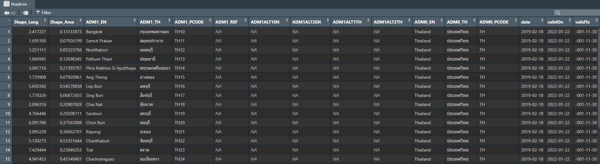
Column 3 (province) and 17 (geometry) will be selected as the relevant columns.
thadmin <- thadmin %>%
select(3, 17)2.3.2.4 Data Inconsistency
Upon running through some observations with the thadmin simple feature data frame with thai_tourism it is observed that there are inconsistencies in the naming terminologies of the provinces.
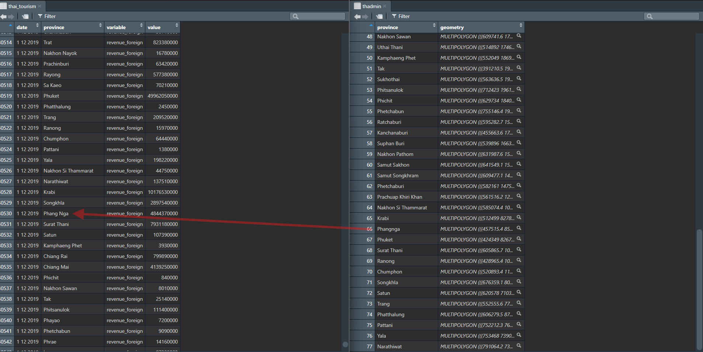
HDX_province_names <- unique(thadmin$province)
HDX_province_names [1] "Bangkok" "Samut Prakan"
[3] "Nonthaburi" "Pathum Thani"
[5] "Phra Nakhon Si Ayutthaya" "Ang Thong"
[7] "Lop Buri" "Sing Buri"
[9] "Chai Nat" "Saraburi"
[11] "Chon Buri" "Rayong"
[13] "Chanthaburi" "Trat"
[15] "Chachoengsao" "Prachin Buri"
[17] "Nakhon Nayok" "Sa Kaeo"
[19] "Nakhon Ratchasima" "Buri Ram"
[21] "Surin" "Si Sa Ket"
[23] "Ubon Ratchathani" "Yasothon"
[25] "Chaiyaphum" "Amnat Charoen"
[27] "Bueng Kan" "Nong Bua Lam Phu"
[29] "Khon Kaen" "Udon Thani"
[31] "Loei" "Nong Khai"
[33] "Maha Sarakham" "Roi Et"
[35] "Kalasin" "Sakon Nakhon"
[37] "Nakhon Phanom" "Mukdahan"
[39] "Chiang Mai" "Lamphun"
[41] "Lampang" "Uttaradit"
[43] "Phrae" "Nan"
[45] "Phayao" "Chiang Rai"
[47] "Mae Hong Son" "Nakhon Sawan"
[49] "Uthai Thani" "Kamphaeng Phet"
[51] "Tak" "Sukhothai"
[53] "Phitsanulok" "Phichit"
[55] "Phetchabun" "Ratchaburi"
[57] "Kanchanaburi" "Suphan Buri"
[59] "Nakhon Pathom" "Samut Sakhon"
[61] "Samut Songkhram" "Phetchaburi"
[63] "Prachuap Khiri Khan" "Nakhon Si Thammarat"
[65] "Krabi" "Phangnga"
[67] "Phuket" "Surat Thani"
[69] "Ranong" "Chumphon"
[71] "Songkhla" "Satun"
[73] "Trang" "Phatthalung"
[75] "Pattani" "Yala"
[77] "Narathiwat" kaggle_province_names <- unique(tourism_stats_grouped$province)
kaggle_province_names [1] "Amnat Charoen" "Ang Thong"
[3] "Bangkok" "Bueng Kan"
[5] "Buriram" "Chachoengsao"
[7] "Chainat" "Chaiyaphum"
[9] "Chanthaburi" "Chiang Mai"
[11] "Chiang Rai" "Chonburi"
[13] "Chumphon" "Kalasin"
[15] "Kamphaeng Phet" "Kanchanaburi"
[17] "Khon Kaen" "Krabi"
[19] "Lampang" "Lamphun"
[21] "Loei" "Lopburi"
[23] "Mae Hong Son" "Maha Sarakham"
[25] "Mukdahan" "Nakhon Nayok"
[27] "Nakhon Pathom" "Nakhon Phanom"
[29] "Nakhon Ratchasima" "Nakhon Sawan"
[31] "Nakhon Si Thammarat" "Nan"
[33] "Narathiwat" "Nong Bua Lamphu"
[35] "Nong Khai" "Nonthaburi"
[37] "Pathum Thani" "Pattani"
[39] "Phang Nga" "Phatthalung"
[41] "Phayao" "Phetchabun"
[43] "Phetchaburi" "Phichit"
[45] "Phitsanulok" "Phra Nakhon Si Ayutthaya"
[47] "Phrae" "Phuket"
[49] "Prachinburi" "Prachuap Khiri Khan"
[51] "Ranong" "Ratchaburi"
[53] "Rayong" "Roi Et"
[55] "Sa Kaeo" "Sakon Nakhon"
[57] "Samut Prakan" "Samut Sakhon"
[59] "Samut Songkhram" "Saraburi"
[61] "Satun" "Sing Buri"
[63] "Sisaket" "Songkhla"
[65] "Sukhothai" "Suphan Buri"
[67] "Surat Thani" "Surin"
[69] "Tak" "Trang"
[71] "Trat" "Ubon Ratchathani"
[73] "Udon Thani" "Uthai Thani"
[75] "Uttaradit" "Yala"
[77] "Yasothon" | tourism_stats | thadmin |
|---|---|
| Lopburi | Lop Buri |
| Chainat | Chai Nat |
| Chonburi | Chon Buri |
| Prachinburi | Prachin Buri |
| Phang Nga | Phangnga |
| Sisaket | Si Sa Ket |
| Buriram | Buri Ram |
| Nong Bua Lamphu | Nong Bua Lam Phu |
On the right side of the table are the 8 provinces from thadmin that are inconsistent with the naming conventions from tourism_stats
The gsub() function from Base R will be used to for string substitution to modify the provinces that are not consistent. The naming convention from tourism_stats will be used.
# Create a vector of old and new province names
rename <- c("Lopburi", "Chainat", "Chonburi", "Prachinburi", "Phang Nga", "Sisaket", "Buriram", "Nong Bua Lamphu")
old_names <- c("Lop Buri", "Chai Nat", "Chon Buri", "Prachin Buri", "Phangnga", "Si Sa Ket", "Buri Ram", "Nong Bua Lam Phu")
# Loop through the old and new names and apply gsub for each replacement
for(i in seq_along(old_names)) {
thadmin$province <- gsub(old_names[i], rename[i], thadmin$province)
}
# Check the updated province names
head(thadmin$province, n = 77) [1] "Bangkok" "Samut Prakan"
[3] "Nonthaburi" "Pathum Thani"
[5] "Phra Nakhon Si Ayutthaya" "Ang Thong"
[7] "Lopburi" "Sing Buri"
[9] "Chainat" "Saraburi"
[11] "Chonburi" "Rayong"
[13] "Chanthaburi" "Trat"
[15] "Chachoengsao" "Prachinburi"
[17] "Nakhon Nayok" "Sa Kaeo"
[19] "Nakhon Ratchasima" "Buriram"
[21] "Surin" "Sisaket"
[23] "Ubon Ratchathani" "Yasothon"
[25] "Chaiyaphum" "Amnat Charoen"
[27] "Bueng Kan" "Nong Bua Lamphu"
[29] "Khon Kaen" "Udon Thani"
[31] "Loei" "Nong Khai"
[33] "Maha Sarakham" "Roi Et"
[35] "Kalasin" "Sakon Nakhon"
[37] "Nakhon Phanom" "Mukdahan"
[39] "Chiang Mai" "Lamphun"
[41] "Lampang" "Uttaradit"
[43] "Phrae" "Nan"
[45] "Phayao" "Chiang Rai"
[47] "Mae Hong Son" "Nakhon Sawan"
[49] "Uthai Thani" "Kamphaeng Phet"
[51] "Tak" "Sukhothai"
[53] "Phitsanulok" "Phichit"
[55] "Phetchabun" "Ratchaburi"
[57] "Kanchanaburi" "Suphan Buri"
[59] "Nakhon Pathom" "Samut Sakhon"
[61] "Samut Songkhram" "Phetchaburi"
[63] "Prachuap Khiri Khan" "Nakhon Si Thammarat"
[65] "Krabi" "Phang Nga"
[67] "Phuket" "Surat Thani"
[69] "Ranong" "Chumphon"
[71] "Songkhla" "Satun"
[73] "Trang" "Phatthalung"
[75] "Pattani" "Yala"
[77] "Narathiwat" 2.3.2.5 Relational Join
The code chunk below is used to join the aspatial and geospatial data by using the left_join() function.
thailand_tourism <- left_join(thadmin,
tourism_stats_grouped, by = c("province" = "province"))2.3.2.6 Saving rds files
In the following code chunk, write_rds() of readr package is used to save the extracted attribute data thailand_tourism into an output file in rds format. The output file is saved in the rds folder.
write_rds(thailand_tourism,
"data/rds/thailand_tourism.rds")The saved file can then be retrieved using the code chunk below:
thailand_tourism <- read_rds("data/rds/thailand_tourism.rds")2.4 Visualing the Indicators of tourism economy of Thailand
2.4.1 Visualing Number of Tourists Variable
A basemap will be prepared to show the distribution of the number of tourists in the provinces of Thailand.
basemap <- tm_shape(thailand_tourism) +
tm_polygons() +
tm_text("province", size = 0.5)
basemap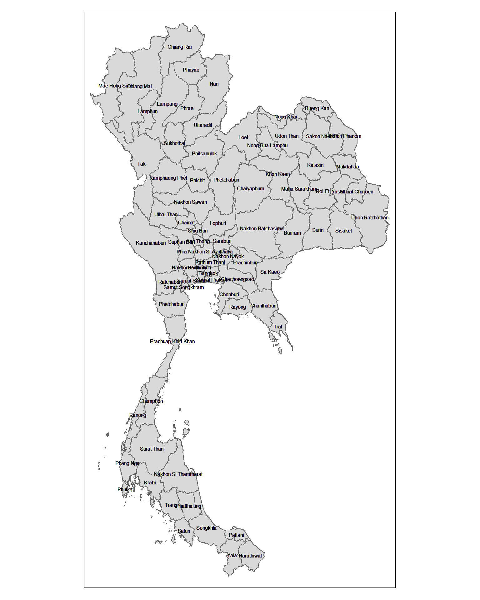
2.4.1.1 All Tourists
all_tourists = thailand_tourism%>%
filter(variable =='no_tourist_all')
basemap01 <- tm_shape(all_tourists) +
tm_polygons(col = "total_value", palette = "Oranges", style='quantile') +
tm_text("province", size = 0.5)
basemap01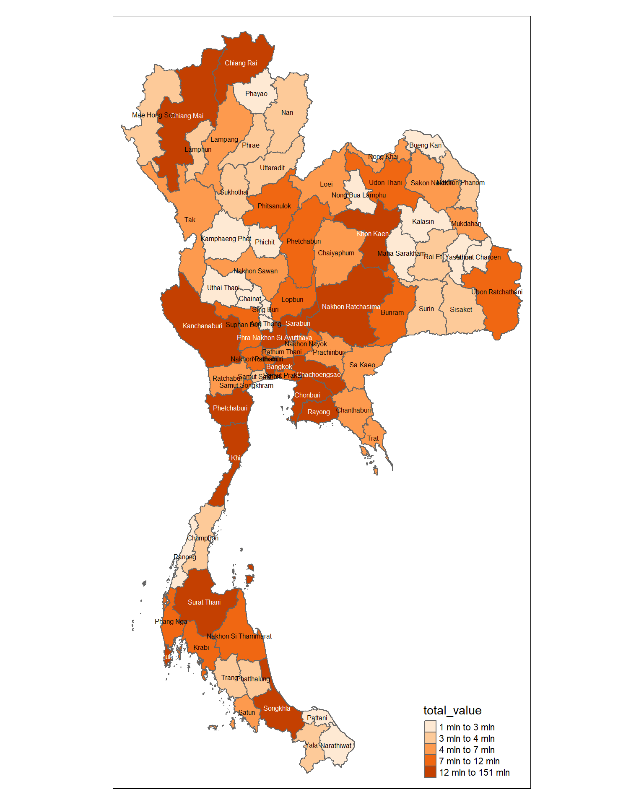
2.4.1.2 Foreign Tourists
foreign_tourists = thailand_tourism%>%
filter(variable =='no_tourist_foreign')
basemap02 <- tm_shape(foreign_tourists) +
tm_polygons(col = "total_value", palette = "Oranges", style='quantile') +
tm_text("province", size = 0.5)
basemap02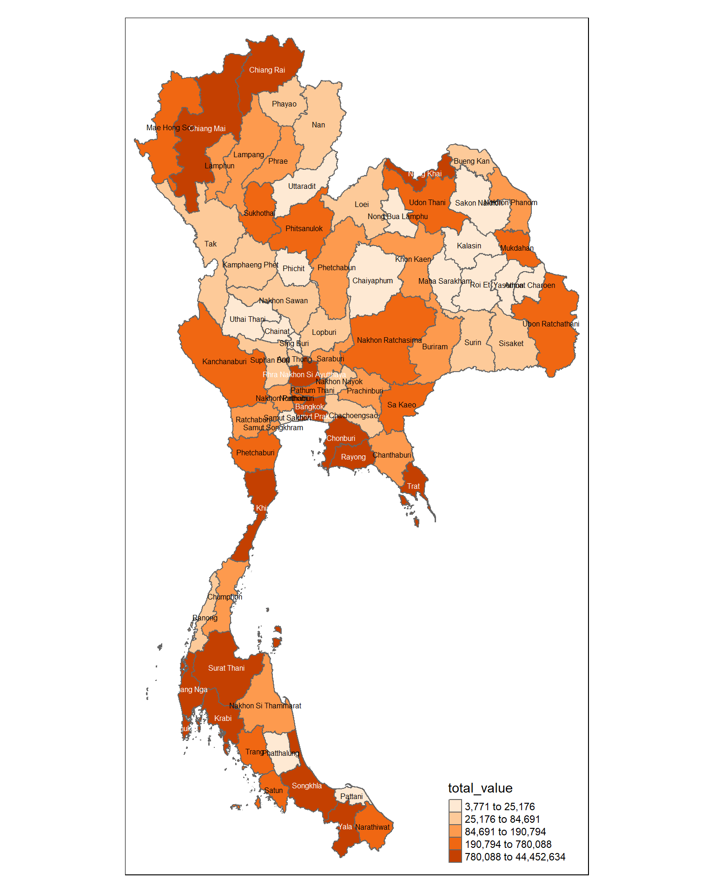
2.4.1.3 Domestic Tourists
domestic_tourists = thailand_tourism%>%
filter(variable =='no_tourist_thai')
basemap03 <- tm_shape(domestic_tourists) +
tm_polygons(col = "total_value", palette = "Oranges", style='quantile') +
tm_text("province", size = 0.5)
basemap03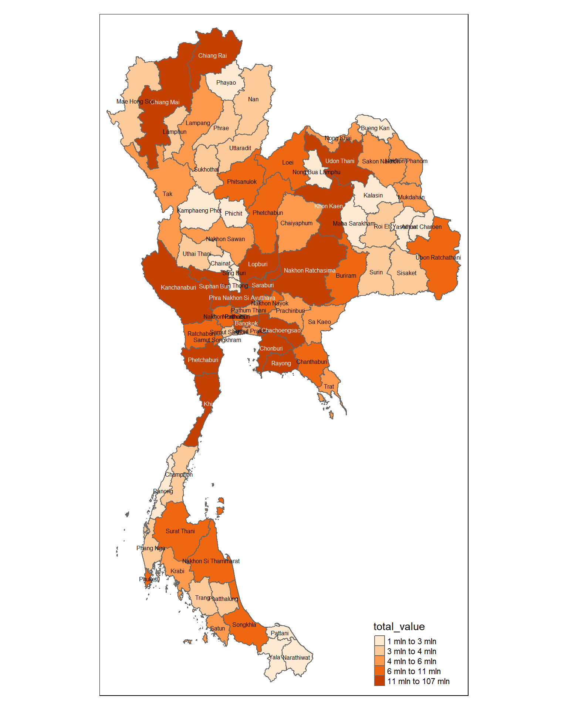
2.4.2 Visualing Revenue Variable
2.4.2.1 All Revenue
all_revenue = thailand_tourism%>%
filter(variable =='revenue_all')
basemap1 <- tm_shape(all_revenue) +
tm_polygons(col = "total_value", palette = "Greens", style='quantile') +
tm_text("province", size = 0.5)
basemap1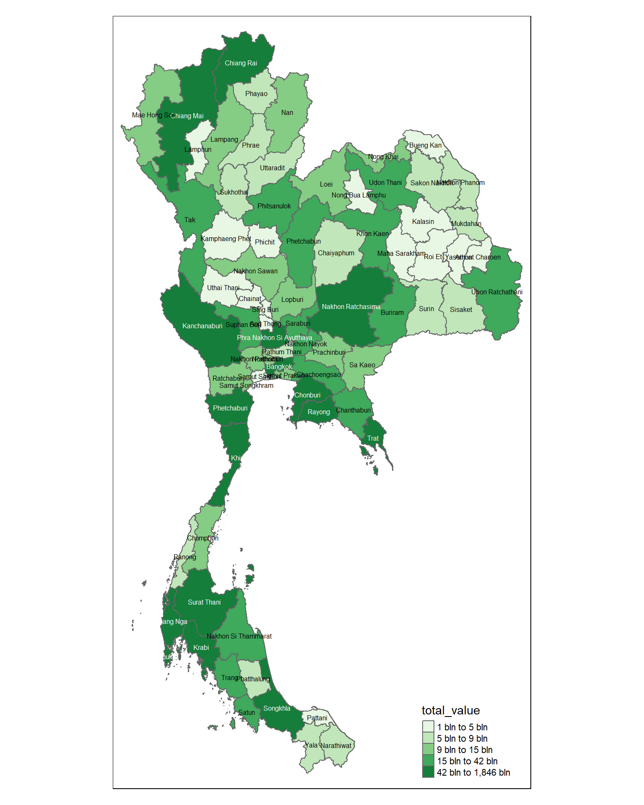
2.4.2.2 Foreign Revenue
foreign_revenue = thailand_tourism%>%
filter(variable =='revenue_foreign')
basemap2 <- tm_shape(foreign_revenue) +
tm_polygons(col = "total_value", palette = "Greens", style='quantile') +
tm_text("province", size = 0.5)
basemap2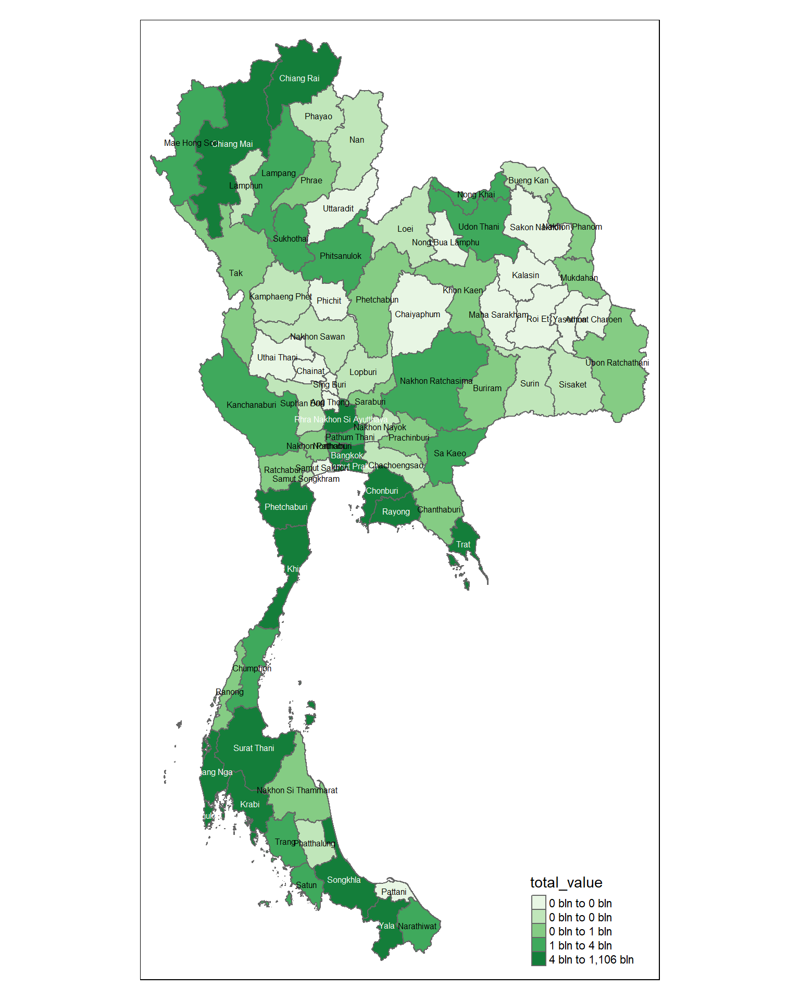
2.4.2.3 Domestic Revenue
thai_revenue = thailand_tourism%>%
filter(variable =='revenue_thai')
basemap3 <- tm_shape(thai_revenue) +
tm_polygons(col = "total_value", palette = "Greens", style='quantile') +
tm_text("province", size = 0.5)
basemap3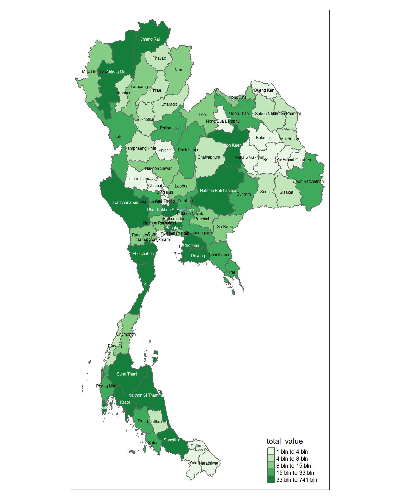
2.5 Spatial Weights and Applications
In this section, poly2nb() of spdep package is used to compute contiguity weight matrices for the study area.
2.5.1 Computing (QUEEN) contiguity based neighbours
The code chunk below is used to compute Queen contiguity weight matrix for revenue.
wm_q <- poly2nb(all_revenue, queen=TRUE)
summary(wm_q)Neighbour list object:
Number of regions: 77
Number of nonzero links: 352
Percentage nonzero weights: 5.93692
Average number of links: 4.571429
1 region with no links:
67
2 disjoint connected subgraphs
Link number distribution:
0 1 2 3 4 5 6 7 8 9
1 1 5 17 15 17 10 5 4 2
1 least connected region:
14 with 1 link
2 most connected regions:
29 51 with 9 linksThe summary report above shows that there are 77 area units in Thailand which represent the provinces. There are 2 most connected area units eacah with 9 neighbours. There is only 1 area unit with only one neighbour.
For each polygon in our polygon object, wm_q lists all neighbouring polygons. For example, to see the neighbours for the 51 polygon in the object, type:
all_revenue$province[51][1] "Tak"The output reveals that Polygon ID = 51 is Tak province.
To reveal the provinces of the nine neighbouring polygons, the code chunk will be used:
all_revenue$province[c(19,20,25,28,30,31,33,35,55)][1] "Nakhon Ratchasima" "Buriram" "Chaiyaphum"
[4] "Nong Bua Lamphu" "Udon Thani" "Loei"
[7] "Maha Sarakham" "Kalasin" "Phetchabun" We can retrieve the revenue of these nine provinces by using the code chunk below.
nb51 <- wm_q[[51]]
nb51 <- all_revenue$total_value[nb51]
nb51[1] 260045700000 4810760000 13421950000 14370950000 12339730000
[6] 4098740000 4543780000 8988760000 77869050000The printed output above shows that the revenue of the nine nearest neighbours based on Queen’s method are 260045700000, 4810760000, 13421950000, 14370950000, 12339730000, 4098740000, 4543780000, 8988760000 and 77869050000 respectively.
We can display the complete weight matrix by using str().
str(wm_q)List of 77
$ : int [1:6] 2 3 4 15 59 60
$ : int [1:2] 1 15
$ : int [1:4] 1 4 5 59
$ : int [1:6] 1 3 5 10 15 17
$ : int [1:7] 3 4 6 7 10 58 59
$ : int [1:4] 5 7 8 58
$ : int [1:8] 5 6 8 10 19 25 48 55
$ : int [1:5] 6 7 9 48 58
$ : int [1:4] 8 48 49 58
$ : int [1:5] 4 5 7 17 19
$ : int [1:3] 12 13 15
$ : int [1:2] 11 13
$ : int [1:5] 11 12 14 15 18
$ : int 13
$ : int [1:8] 1 2 4 11 13 16 17 18
$ : int [1:4] 15 17 18 19
$ : int [1:5] 4 10 15 16 19
$ : int [1:5] 13 15 16 19 20
$ : int [1:8] 7 10 16 17 18 20 25 29
$ : int [1:5] 18 19 21 29 33
$ : int [1:4] 20 22 33 34
$ : int [1:4] 21 23 24 34
$ : int [1:3] 22 24 26
$ : int [1:5] 22 23 26 34 38
$ : int [1:4] 7 19 29 55
$ : int [1:3] 23 24 38
$ : int [1:3] 32 36 37
$ : int [1:3] 29 30 31
$ : int [1:9] 19 20 25 28 30 31 33 35 55
$ : int [1:6] 28 29 31 32 35 36
$ : int [1:6] 28 29 30 32 53 55
$ : int [1:4] 27 30 31 36
$ : int [1:5] 20 21 29 34 35
$ : int [1:6] 21 22 24 33 35 38
$ : int [1:6] 29 30 33 34 36 38
$ : int [1:6] 27 30 32 35 37 38
$ : int [1:3] 27 36 38
$ : int [1:6] 24 26 34 35 36 37
$ : int [1:5] 40 41 46 47 51
$ : int [1:3] 39 41 51
$ : int [1:7] 39 40 43 45 46 51 52
$ : int [1:4] 43 44 52 53
$ : int [1:5] 41 42 44 45 52
$ : int [1:3] 42 43 45
$ : int [1:4] 41 43 44 46
$ : int [1:3] 39 41 45
$ : int [1:2] 39 51
$ : int [1:8] 7 8 9 49 50 51 54 55
$ : int [1:5] 9 48 51 57 58
$ : int [1:5] 48 51 52 53 54
$ : int [1:9] 39 40 41 47 48 49 50 52 57
$ : int [1:6] 41 42 43 50 51 53
$ : int [1:6] 31 42 50 52 54 55
$ : int [1:4] 48 50 53 55
$ : int [1:7] 7 25 29 31 48 53 54
$ : int [1:5] 57 59 60 61 62
$ : int [1:5] 49 51 56 58 59
$ : int [1:7] 5 6 8 9 49 57 59
$ : int [1:7] 1 3 5 56 57 58 60
$ : int [1:4] 1 56 59 61
$ : int [1:3] 56 60 62
$ : int [1:3] 56 61 63
$ : int [1:2] 62 70
$ : int [1:5] 65 68 71 73 74
$ : int [1:4] 64 66 68 73
$ : int [1:3] 65 68 69
$ : int 0
$ : int [1:5] 64 65 66 69 70
$ : int [1:3] 66 68 70
$ : int [1:3] 63 68 69
$ : int [1:5] 64 72 74 75 76
$ : int [1:3] 71 73 74
$ : int [1:4] 64 65 72 74
$ : int [1:4] 64 71 72 73
$ : int [1:3] 71 76 77
$ : int [1:3] 71 75 77
$ : int [1:2] 75 76
- attr(*, "class")= chr "nb"
- attr(*, "region.id")= chr [1:77] "1" "2" "3" "4" ...
- attr(*, "call")= language poly2nb(pl = all_revenue, queen = TRUE)
- attr(*, "type")= chr "queen"
- attr(*, "sym")= logi TRUEwm_q_foreign <- poly2nb(foreign_revenue, queen=TRUE)
summary(wm_q)Neighbour list object:
Number of regions: 77
Number of nonzero links: 352
Percentage nonzero weights: 5.93692
Average number of links: 4.571429
1 region with no links:
67
2 disjoint connected subgraphs
Link number distribution:
0 1 2 3 4 5 6 7 8 9
1 1 5 17 15 17 10 5 4 2
1 least connected region:
14 with 1 link
2 most connected regions:
29 51 with 9 linkswm_q_thais <- poly2nb(thai_revenue, queen=TRUE)
summary(wm_q)Neighbour list object:
Number of regions: 77
Number of nonzero links: 352
Percentage nonzero weights: 5.93692
Average number of links: 4.571429
1 region with no links:
67
2 disjoint connected subgraphs
Link number distribution:
0 1 2 3 4 5 6 7 8 9
1 1 5 17 15 17 10 5 4 2
1 least connected region:
14 with 1 link
2 most connected regions:
29 51 with 9 links2.5.2 Computing (ROOK) contiguity based neighbours
The code chunk below is used to compute Rook contiguity weight matrix.
wm_r <- poly2nb(all_revenue, queen = FALSE)
summary(wm_r)Neighbour list object:
Number of regions: 77
Number of nonzero links: 352
Percentage nonzero weights: 5.93692
Average number of links: 4.571429
1 region with no links:
67
2 disjoint connected subgraphs
Link number distribution:
0 1 2 3 4 5 6 7 8 9
1 1 5 17 15 17 10 5 4 2
1 least connected region:
14 with 1 link
2 most connected regions:
29 51 with 9 links2.5.3 Visualising contiguity weights
To create a connectivity graph for polygons, we first need to obtain points that represent each polygon. The most common method for this is to calculate the centroids of the polygons. Using the sf package in R, the centroid for each polygon can be calculated. However, rather than simply applying st_centroid() directly on the geometry column, the coordinates of these centroids need to be extracted into a separate data frame.
To achieve this, a mapping function will be used to apply st_centroid() to each polygon in the geometry column. The map_dbl() function from the purrr package will be used to handle this, as it applies a function to each element of a vector and returns a vector of the same length, which can then be used for further graph construction.
To get our longitude values we map the st_centroid function over the geometry column of us.bound and access the longitude value through double bracket notation [[]] and 1. This allows us to get only the longitude, which is the first value in each centroid.
longitude <- map_dbl(all_revenue$geometry, ~st_centroid(.x)[[1]])We do the same for latitude with one key difference. We access the second value per each centroid with [[2]].
latitude <- map_dbl(all_revenue$geometry, ~st_centroid(.x)[[2]])Now that we have latitude and longitude, we use cbind to put longitude and latitude into the same object.
coords <- cbind(longitude, latitude)We check the first few observations to see if things are formatted correctly.
head(coords) longitude latitude
[1,] 675514.6 1523087
[2,] 685033.7 1503755
[3,] 650477.2 1539777
[4,] 681656.0 1555581
[5,] 664627.1 1586462
[6,] 645239.0 16171182.5.3.1 Plotting Queen contiguity based neighbours map
plot(all_revenue$geometry, border="lightgrey")
plot(wm_q, coords, pch = 19, cex = 0.6, add = TRUE, col= "red")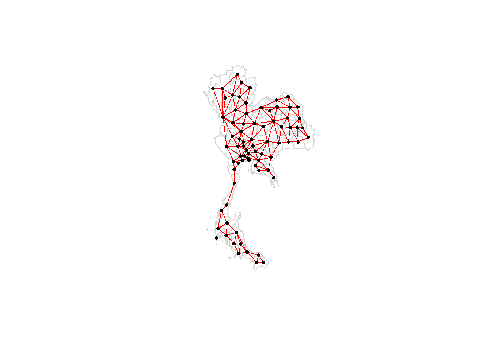
2.5.3.2 Plotting Rook contiguity based neighbours map
plot(all_revenue$geometry, border="lightgrey")
plot(wm_r, coords, pch = 19, cex = 0.6, add = TRUE, col = "red")
2.5.3.3 Plotting both Queen and Rook contiguity based neighbours maps
par(mfrow=c(1,2))
plot(all_revenue$geometry, border="lightgrey", main="Queen Contiguity")
plot(wm_q, coords, pch = 19, cex = 0.6, add = TRUE, col= "red")
plot(all_revenue$geometry, border="lightgrey", main="Rook Contiguity")
plot(wm_r, coords, pch = 19, cex = 0.6, add = TRUE, col = "red")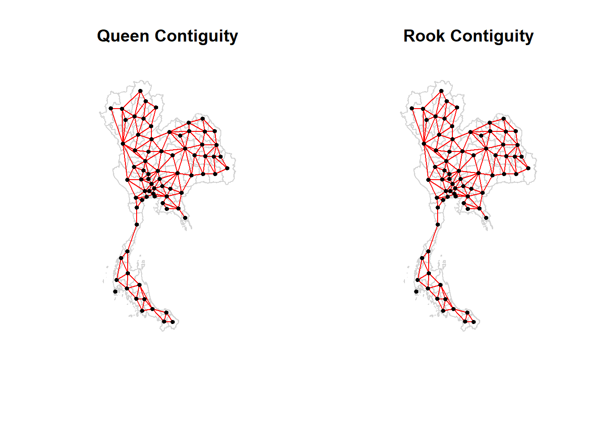